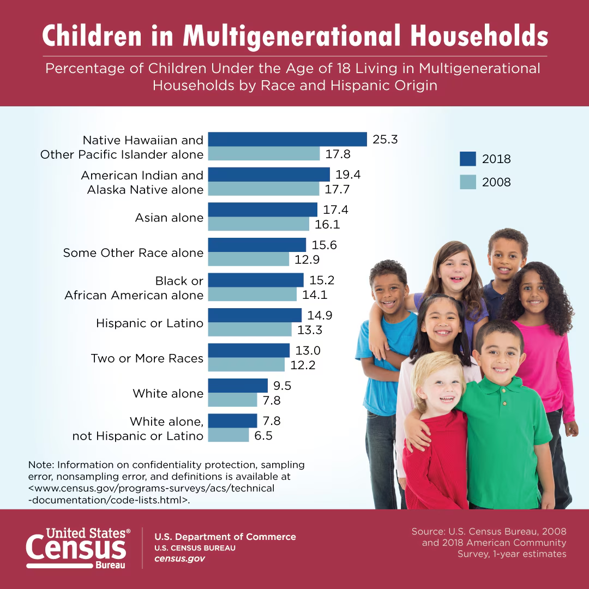

Welcome!
Hello and welcome! I'm Fran, and my research is all about celebrating the strengths of families, schools, and communities working together. Let’s explore how cultural values, close family ties, and open communication can help children thrive, while also recognizing when kids may need extra support.
- Why it matters: Collaboration leads to improved student outcomes, resilience, and mental health.
- Key findings: Family engagement, counselor support, and community involvement are critical. In some cultures, close family bonds are a source of pride and strength.
- Action: Open dialogue and shared resources empower all stakeholders. Let’s encourage healthy boundaries and celebrate togetherness!

Children Living in Multigenerational Households

What does family togetherness mean to you? How can we support children’s independence and emotional
health?